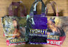
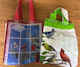

Saving abused, abandoned & neglected Great Danes. Bethel, Ohio.
11567 St. Rt. 774 • Open By Appointment Only • info@hhdane.org
Your new best friend is waiting
Harlequin Haven is a NO KILL shelter in Ohio dedicated to saving and placing abused, abandoned, and neglected Great Danes in loving forever homes.
The welfare and safety of every dog is our main concern. All applications are carefully screened to ensure the right Dane finds the right home.
We are a 501(c)(3) non-profit with an all-volunteer staff. To date we have adopted out 1,675 Great Danes, other breeds, designer breeds and horses. In 2024 we spent over $18,600 on veterinary bills alone.
A Great Dane with an extraordinary gift. Mozart's unique and beautiful paintings make wonderful gifts for all occasions. Layaway and gift certificates available.
Visit Mozart's Gallery →They're back — and they make great gifts!


We are 100% volunteer-run. Your tax-deductible donation pays for vet care, food, and the chance at a forever home for a dog that has nowhere else to go.
Donate Today